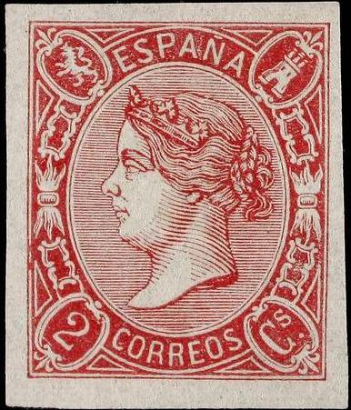
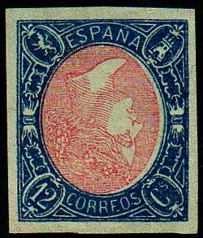
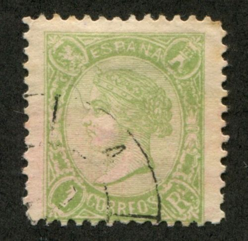
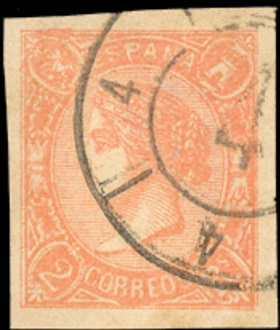
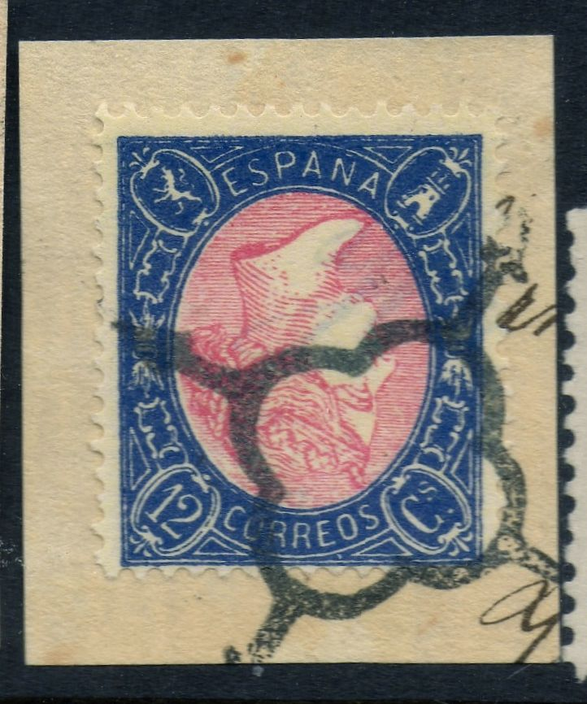
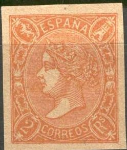
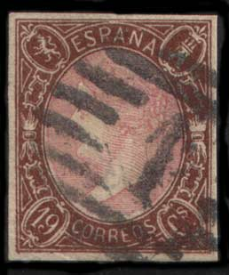
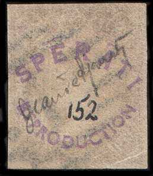

Return To Catalogue - Spain 1860-1864 Queen Isabella - Queen Isabella, 1850-1859 - Spain overview
Note: on my website many of the
pictures can not be seen! They are of course present in the
catalogue;
contact me if you want to purchase it.
For issues of Spain with the image of Queen Isabella issued from 1860 to 1864 click here.
2 c red 4 c blue 12 c blue and red 19 c brown and red 1 r green 2 r orange 2 r lilac Perforated (1865)
2 c red 4 c blue 12 c blue and red 19 c brown and red 1 r green 2 r orange 2 r lilac
For the specialist, these stamps have perforation 14.
Value of the stamps |
|||
vc = very common c = common * = not so common ** = uncommon |
*** = very uncommon R = rare RR = very rare RRR = extremely rare |
||
| Value | Unused | Used | Remarks |
| Imperforate | |||
| 2 c | R | R | |
| 4 c | RRR | ? | cancelled stamps do not exist? |
| 12 c | RR | *** | Inverted center: RRR |
| 19 c | RRR | RRR | |
| 1 r | RR | RR | |
| 2 r orange | RR | RR | |
| 2 r lilac | RR | R | |
| Perforated | |||
| 2 c | RR | R | |
| 4 c | *** | * | |
| 12 c | RR | *** | Inverted center: RRR |
| 19 c | RRR | RRR | |
| 1 r | RRR | RRR | |
| 2 r orange | RRR | RR | |
| 2 r lilac | RR | RR | |
Mass cancellations were applied after the stamps became invalid (three horizontal bars) and were sold to a dealer, example:
There exist stamps with inverted center part of the 12 c, example:
Genuine, image reproduced with permission from:
http://www.sandafayre.com
The 4 c imperforate is quite rare, in contrast to the 4 c perforate, which is very common. Be aware of cut-off perforations of the perforated stamps:

(An 'imperforate' stamp probably with the perforation cut off)


Postal forgery of the 12 c value, note the strange shape of the
"S" of "CS". The tail of the lion is too
thick. Next to it a postal forgery of the 1 Rs stamp, also with a
too thick tail. Possibly these forgeries were made by the same
forger.

Postal forgery of the 2 r value
Postal forgeries exist of the values 12 c, 1 r and 2 r apparently made by the same forger. They were used in Barcelona and Madrid.
According to the Serrane guide, none of the forgeries, Barcelona (Segui), Geneva (Fournier) or Florence, have copied the hairlines that exists in the value tablets of the original stamps. This remark is according to me also valid for the Peter Winter forgeries, but not for the Sperati forgeries.
Examples:



The cancel on the first forgery and the first 2 blocks is
"GRANOLLERS 14 AGO 65 BARCELONA"; I've also seen a 2 c
red forgery with the same cancel.
Bogus issue: a 12 c forgery with inverted colours! Other bogus
stamps that I've seen are 4 c blue and red centre (imperforate)
and 12 c brown and red inverted centre (imperforate)
 


Forgery with the "C" of "CORREOS" almost
touching the value lable to the left. When perforated, the
perforation is wrong. Also, it often is cancelled with a very
clear "4" numeral cancel. This forgery might be of
Italian origin. Since I don't know the name (Oneglia??), I've
indicated him as 'Forger A'.
Misprints exist with inverted or missing centers.

Two dangerous forgeries of the 19 c and 12 c values
Fournier forgeries:


Images taken from a Fournier Album.

Fournier forgeries.


In the 19 c forgeries, the nose of the Queen appears to be too
pointed when compared to a genuine stamp
The above Fournier forgeries have the cancel 'SALAS DE LOS INFANTES BURGOS 7 FEB 65' (first three images, the word 'SALAS' looks more like 'CALAC') or 'CAMPILLOS 8 OCT 66 MALAGA' as they can be found in 'The Fournier Album of Philatelic Forgeries'.
Forged Fournier cancels, reduced sizes. The 'CAMPILLOS' and '1'
cancel were also used on these forgeries.
Peter Winter forgeries:


12 c and 19 c with inverted center: Peter Winter forgeries.

19 c Peter Winter forgery, with wrong
colours

Most likely another Winter product on part of a letter.
Segui (Barcelona) forgeries:



(Segui forgeries of the 19 c, 1 r and 2 r stamps)
Segui made forgeries of the 12 c, the 19 c, 1 r and 2 r lilac and the 2 r orange stamp.
Sperati forgeries:
 
(Front and backside of a Sperati forgery)


(Front and backside of a perforated Sperati forgery)

Frame 'B', Head 'B'
Head 'A' Sperati blackprint
The above forgeries were produced by Jean de
Sperati. They first appeared in 1942. The paper and cancel are
genuine in these forgeries! Sperati used low-valued stamps of
this issue and removed the design chemically, leaving the cancel
intact. The new design of the 19 c was then printed on this
bleached out stamp. These forgeries are not very common and quite
expensive. They were so good that he even fooled experts. This
particular copy has been handstamped 'Sperati Reproduction' in
violet ink by the British Philatelic Association and numbered
'152', the number of the BPA Sperati book in which it was
included for reference.
Sperati made two different reproductions of the frame (Frame 'A'
and 'B') and two of the head (Head 'A' and 'B'). Frame 'A' is
rather deceptive. Frame 'B' has two white spots between the 'ES'
of 'ESPANA'. Head 'A' has a colored spot on the top right hand
side, just outside the ellipse. Head 'B' is rather deceptive.


(Front and backside of a 1 R Sperati forgery)

Distinguishing characteristics of the 1 Rl Sperati forgery
The above images are Sperati forgeries of the 1 R stamp. There are several white spots in the Sperati forgeries, especially in the lower right hand side of the 'E' of 'ESPANA' and to the top left and right of the 'S' of this word. There are also some white spots in front of the 'C' of 'CORREOS' and in the lower part of the 'O' of this word a white smudge can be found. Sperati forged both the perforated and imperforate stamps.


Sperati forgeries of the 4 c imperforate stamp. There are two
white spots above the first 'A' of 'ESPANA'. Also, the background
shading is broken just below to the left of the chin of the
Queen.
Sperati also made forgeries of the 12 Cs with inverted frame (sorry, no image available yet).
For issues of Spain from 1866 to 1870 with the image of Queen Isabella click here.


{kind=link}
{kind=link}
{kind=link}
{kind=link}
{kind=link}
{kind=link}
{kind=link}
{kind=link}
{kind=link}
{kind=link}